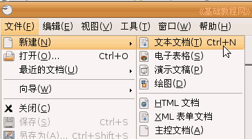

OpenOffice.org 教程之 Writer 文字处理
作者：TeliuTe 来源：基础教程网
练习 返回目录 下一课这一课我们来做一些练习，巩固所学的基础知识，每个文件都单独保存到自己的文件夹；
做完一题后，点“文件－关闭”，然后再点“文件－新建－文本文档”，

1）输入自己的班级，以“班级”为文件名，保存到自己的文件夹；
2）输入自己的学校，以“学校”为文件名，保存到自己的文件夹；
3）输入三个你熟悉的树木的名称，以“树木”为文件名，保存到自己的文件夹；
4）输入三个你熟悉的城市的名称，以“城市”为文件名，保存到自己的文件夹；
5）输入三个你熟悉的体育项目，以“体育运动”为文件名，保存到自己的文件夹；
6）输入三个你喜欢的电视剧名称，以“电视剧”为文件名，保存到自己的文件夹；
7）写一篇简单的日记，记录一下自己一天的心情和收获，以日记为文件名保存到自己的文件夹；123
本教程由86团学校TeliuTe制作|著作权所有，不得用于商业用途
基础教程网：http://teliute.org
美丽的校园……
转载和引用本站内容，请保留版权信息和本站链接。